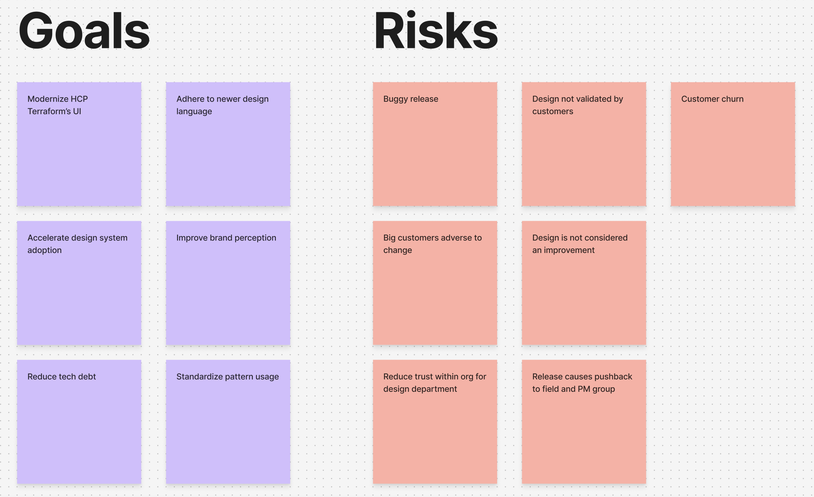
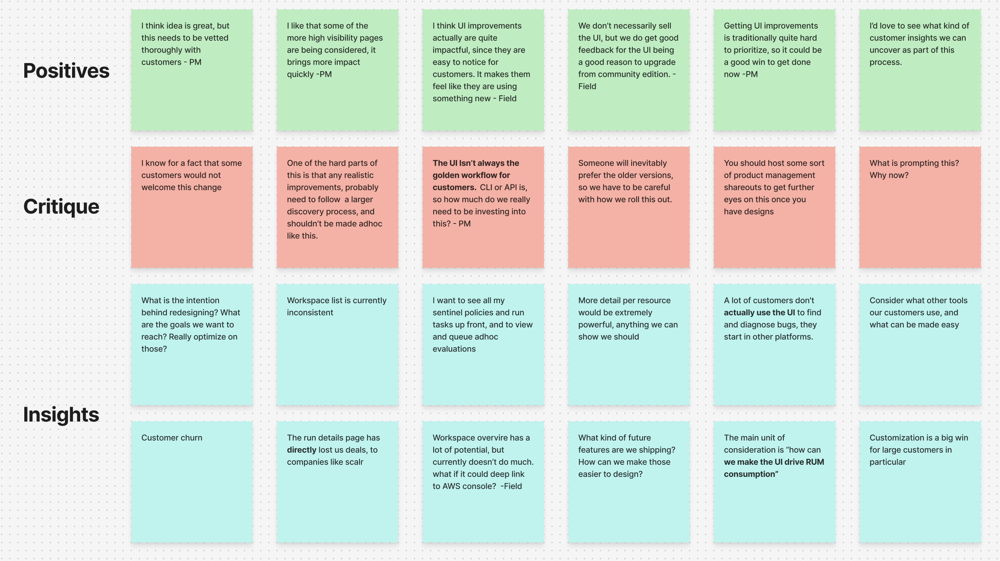
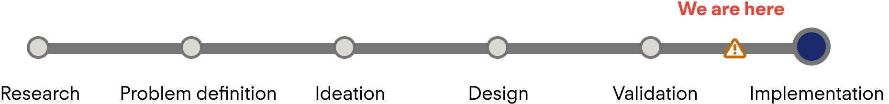
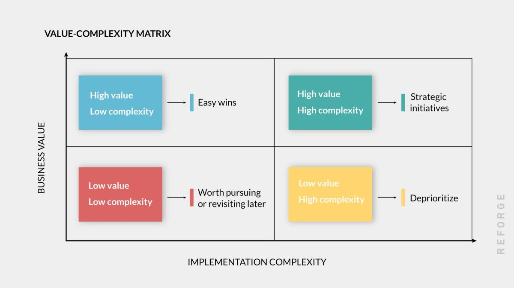
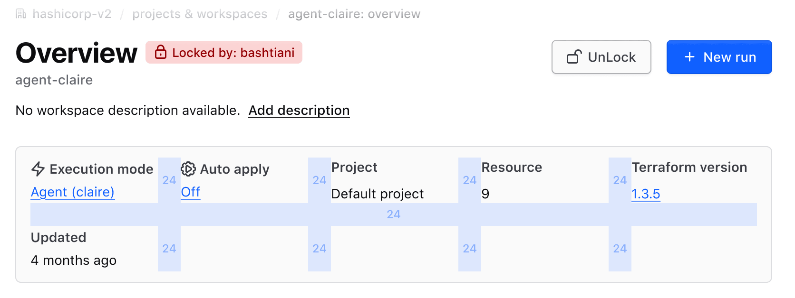
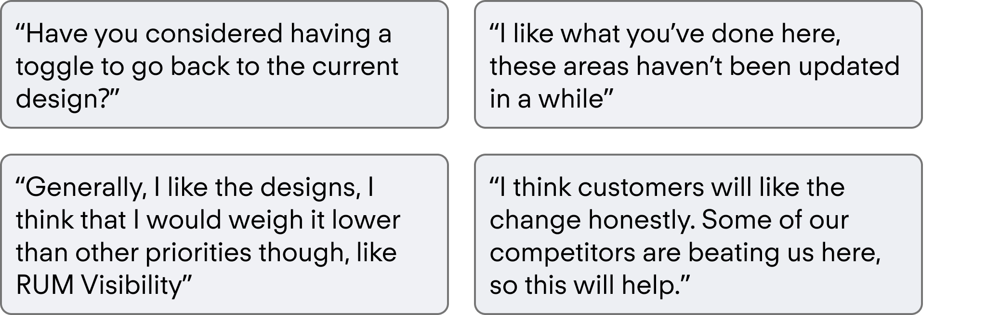
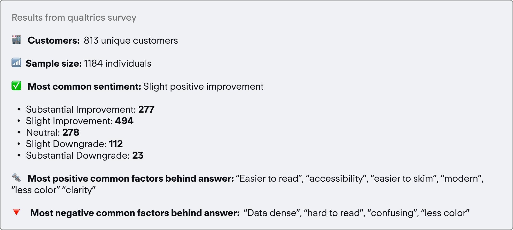

Rethinking the UI of the multi million DAU pages of HashiCorp’s flagship product.

HashiCorp
Q1 2025
Lead Product Designer, Researcher
Figma, Snowflake, CommandAI
The UI of the product had organically lagged from feature development, and felt dated.
Developer tools are notoriously known for having poor user interfaces, its like the field is allergic to products that are both powerful and also nice to look at 😝. So you can imagine my excitement when I was tapped to work on some UI improvements for HCP Terraform, a managed service to deploy and track cloud infrastructure. During my time at HashiCorp, I had often focused more on feature work, but I am a deep proponent of continuous improvement of the overall experience. This project was a key lesson in managing scope creep and taking an ambiguous project brief into a redesign of the 4 highest traffic pages on HCP Terraform.
Improve the UI of some of the high traffic pages of our application.
As a designer, hearing “make this look nicer” usually makes your eyes roll—but this time, I welcomed it. Terraform Cloud’s UI had only seen incremental updates since its 2018 launch and was overdue for a facelift. Six years is a long time in design, and the product showed it.
The challenge, familiar to many SaaS companies, was balancing new feature demands (to reduce churn and win contracts) with addressing design and tech debt. While the project had executive backing from design and engineering, it lacked full company buy-in—most notably from product. This absence of true product management ownership reflected the fuzzy EPD structure around the project.
This theme of unclear ownership shaped much of what followed.

I wanted to root all the potential UI changes that I was proposing in real customer problems, and less gut feeling. To do this I started out with understanding sentiment in product through two main methods: cognitive ethnography and direct feedback form.
I conducted cognitive ethnography through social media, a method chosen for its efficiency in time and cost. Leveraging HashiCorp’s user base provided quick, free insights that formed a foundation for optimization. I supplemented this with ad-hoc feedback via anonymous Reddit surveys and in-app Snowflake forms.
Additionally, I analyzed familiar design patterns practitioners already use. By reusing these patterns, I reduced the need for relearning and made the new UI more efficient.
Users find significant friction in high traffic pages that don’t meet basic usability goals and force users to complete extra steps to consume data.
Creating an affinity map allowed me to stank rank ideas and weigh tradeoffs. UI Changes carry more weight than you think, when considering customer adversity to change.
The next step was to engage with the internal liaison for customers - the field and PM’s. Both levels of subject matter experts could help point me towards larger pain points with the UI that had been collected but perhaps not prioritized. This could help us to justify working on this project. From here, I created a simple affinity map, and then tailored my first attempt at ideating on what an improvement could look like.
 High traffic pages that the users land on influence brand perception, and in their current state don’t fit into the more evolved design language of newer features.
In order to get internal buy in, we must manage scope creep and provide clear foundational wins to the organization.
Deliver a highly scoped redesign of the 4 highest traffic pages on terraform to improve usability, accelerate design system adoption, and create a more recognizable design language without introducing new features.
We needed high level themes to make this project feasible, and ensure scope doesn't blow up.
From this design goal, we had a couple key parts of this project to decompose our ideation into:
Usability: Fix bugs, heuristic issues, and feedback points of these key pages
Accelerate design system adoption: Quantitative measure to show key win and match towards company goals.
Create recognizable design language: Use patterns that exist already and have been codified and validated by customers to reduce risk
No new functionality: New features needs product teams to own it, discovery on if customers need this, and a more defined product development process.
This allowed me to think more clearly about some of the pain points that exist and translating that to the new UI.
The first concept for this stemmed directly from the usability improvements that we had highlighted.
We used our internal SME's and power users to yield insights which informed our first concepts. With this, I tried to push the bar as much as I could visually, to see how customers would react.


Customers overwhelmingly liked the direction, but there was small nitpicks around presentation.
The next step was ensuring that what was being designed really had met the goals that we set out to do. This was done through several customer calls were we went over the proposed designs and captured sentiment.
Additionally, we circulated this to customers through the field, and got eyes on it. At this stage, the feedback was overwhelmingly positive, and truly I felt chuffed that we were going to get closer to delivering something that i thought would bring a lot of value.
Despite customer feedback, our product org believed the proposed designs were too radical of a change, and therefore would necessitate longer discovery.
At this stage unfortunately we started to hit a roadblock - product management started to get increasingly uneasy that there was not product involvement in this, and what that potential blowback would look like. Their fears were rooted in reality, and while frustrating, I saw their points:
1. Who would own this if it went spectacularly wrong?
2. Did this go through formal product development processes that we have internally?
3. What level of discovery was done here?
4. Why was this done in a silo?
I could have aimed to rebut each question, but rather than looking at it as an us vs them situation, I aimed to answer their core concern, which is risk.

With UI based changes, the risk matrix often will tell the tail that it is not worth pursuing, in that often it can be categorized as low impact and high risk. After all, users likely won't buy your enterprise infrastructure software because of the UI, but existing customers absolutely will be upset if the UI changes drastically for the worse.
My first approach was scaling back degree of change by creating a consistent design language product wide.
This included auditing patterns across the product, and workshopping a consistent language for how our product should look.
So really, our goal was to disprove the assumption that this UI project was low impact.
To me, the ultimate way to definitively de-risk a design is to provide a substantial sample size of users that validate your decision decisions, which gives you too much ammo to be rejected. To accomplish this, I first set out to do this in two ways:
Raise awareness internally of the changes and get field buy in
Connect with customers directly and understand their general sentiment
Our sales and solution engineering teams approved of the changes.
To me, internal awareness started with the people who were often the closest to customers — the sales folks and solution architects of the company. To accomplish this, I reached out to 10 sales folks who represent different segments of customers and conducted concept validation tests with them, walking them through the designs and getting their feedback.
A large scale (n=1184) survey showed that 65% thought the new designs was an improvement, while 23% said it was a substantial improvement.
Finally, my most daring bet here was to consider de-risking design by reaching out to customers directly, through a survey. In my mind, if I could reach 1k+ users and get a general sentiment that the designs are a true improvement, then I could feel confident in knowing that this design is safe. To accomplish this, I pulled a list of active users who have provisioned a workspace through the UI. This validated that they are my target persona. Next, I plugged it into Marketo and made sure that they were not individuals who had opted out of communication, as there would be legal ramifications with contacting individuals who had opted out.
Finally, leadership started to see the value of changing UI. Under one condition: keep engineering committment low.
With these two core steps accomplished, convincing leadership became much easier. I had definitively proved that these designs were better and worth working on, and we finally were able to gather buy-in from the top down. This resulted in finally getting the go ahead from stakeholders org wide to invest engineering capacity towards it. Unfortunately, I had to concede on exactly how many people would get to work on this, and we only had 1 FTE allotted to the project.
After another round of careful iteration from the feedback gathered through validation, I was able to deliver the following 4 screens — this is the before and after.
The new design focused on minimalism, which was the new design standard that was being brought through in other areas of the product, while trying to keep the pages as actionable as possible.
Workspace List Before and After
Goal: Make the page more actionable
The list previously used distracting badges and wasn't very easy to skim. Rearranging status to be more modern felt like the right way forward.


Workspace Overview Before and After
Goal: Make the list easier to skim, and pull the more important information to the top.
Considerations: This page is the central landing page of the workspace, the fundamental unit of Terraform. However, this page lacks actionability, and as a result isn't a part of a customer workflow too often.
To make it more actionable, I tried using color more thoughtfully.


Run List Before and After
Goal: Reduce visual fatigue on the list.
Considerations: This list can be many rows long, we need this to be as skimmable as possible and reorient the information to be more actionable. The previous version overemphasized the avatar, which can many times be a bot conducting a job when using the terraform API.


Run Details Before and After
Goal: Reduce visual fatigue, and increase actionability.
Considerations: The color used previously made it easy to see high level operations but was a strain to look at. Also considering user behavior, customers don't come to this page unless they are debugging, which is the critical user journey we need to support, hence the high level info cards.


The full prototype of changed pages.
More than the UI changes, I learned how to advocate for a design I believed in, and influence others to make a change.
This refresh touched a product used by tens of thousands of practitioners daily, making its impact both wide-reaching and immediate. One of the hardest parts of the journey wasn’t the design work itself, but convincing others that change was necessary. Early concepts and visuals became powerful tools to shift that perception—showing, not just telling, what a modernized Terraform Cloud could feel like. In the end, the UI proved to be more than surface-level polish: it reinforced HashiCorp’s brand perception, signaling maturity, trust, and care for the user experience at scale.